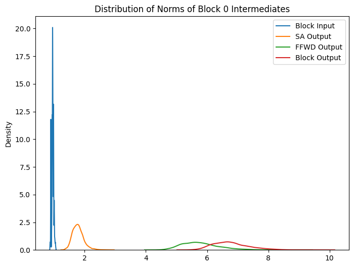

environment = get_environment()
print(f"environment is {environment.name}")environment is local_macenvironment is local_macdevice = 'cuda' if torch.cuda.is_available() else 'cpu'
ts = TinyShakespeareDataSet(cache_file=environment.code_root / 'nbs/artifacts/input.txt')
m, tokenizer = create_model_and_tokenizer(
saved_model_filename=environment.code_root / 'nbs/artifacts/shakespeare-20231112.pt',
dataset=ts,
device=device,
)
_, val_data = split_text_dataset(ts.text, tokenizer, train_pct=0.9, device=device)
encoding_helpers = EncodingHelpers(tokenizer, device)
accessors = TransformerAccessors(m, device)torch.manual_seed(1442)
n_prompts = 20000
torch.manual_seed(1337)
indices = torch.randperm(len(strings10))[:n_prompts]
prompts = [strings10[i.item()] for i in indices]
prompts[:5]['is dreams,', 'by present', 's eyes may', 'eart of ho', ' man, as I']# Tokenize the strings
tokens = encoding_helpers.tokenize_strings(prompts)
# Embed the tokens
accessors = TransformerAccessors(m, device)
embeddings = accessors.embed_tokens(tokens)
# Run them through the model with hooks attached that let us look at
# intermediate values
_, io_accessors = accessors.run_model(embeddings)def logits_from_block_output(block_output: torch.Tensor, block_idx: int) -> torch.Tensor:
# If we're not at the last layer, run the rest of the model, otherwise
# just get the logits from the embedding.
if block_idx < n_layer - 1:
logits, _ = accessors.run_model_from_block_n(block_output, block_idx+1)
else:
logits = accessors.logits_from_embedding(block_output)
return logits
def probs_from_logits(logits: torch.Tensor) -> torch.Tensor:
return F.softmax(logits, dim=-1)def get_intermediates(block_idx: int, io_accessors: Sequence[InputOutputAccessor]) -> Tuple[torch.Tensor, torch.Tensor, torch.Tensor]:
block_input = io_accessors[block_idx].input('.')
sa_output = io_accessors[block_idx].output('sa')
ffwd_output = io_accessors[block_idx].output('ffwd')
block_output = io_accessors[block_idx].output('.')
# Sanity check: block output is the sum of the block input, sa_output,
# and ffwd_output.
assert torch.all(block_output == block_input + sa_output + ffwd_output)
# Sanity check: the block output is the same as the next block's input
if block_idx < n_layer - 1:
assert torch.all(block_output == io_accessors[block_idx+1].input('.'))
return block_input, sa_output, ffwd_output, block_outputWithin a block, the input embedding is adjusted twice: first by adding the output of the self-attention module, then by adding the output of the feed-forward network to that sum:
class Block(nn.Module):
"""One transformer block"""
...
def forward(self, x):
x = x + self.sa(self.ln1(x)) # The `x +` part is a skip connection
x = x + self.ffwd(self.ln2(x)) # The `x +` part is a skip connection
return xThis is equivalent to the following code, which, by using some intermediate local variables, makes the two adjustments a little clearer:
def forward(self, x):
sa_output = self.sa(self.ln1(x))
ffwd_output = self.ffwd(self.ln2(x + sa_output))
return x + sa_output + ffwd_outputThe output of the block is the original embedding, plus the self-attention output, plus the feed-forward network output.
In this analysis, we’ll look at the impact of each of the two adjustments on the final output of the model. Specifically, compute the output logits from the original output of the block and compare this to the output logits that the model would have produced had the self-attention output not been added (i.e. if the block output had been just x + ffwd_output) and if the feed-forward network output had not been added (x + sa_output). We’ll also look at the impact on output probabilities.
def analyze_intermediate_impact(
block_idx: int,
sa_output: torch.Tensor,
ffwd_output: torch.Tensor,
block_output: torch.Tensor,
):
print(f"Block {block_idx}")
# Get the logits that would have been produced by the normal block
# output. This is the baseline we're comparing against.
logits = logits_from_block_output(block_output[:, -1, :].unsqueeze(1), block_idx)
# Get the logits that would have been produced by the block output
# minus the self-attention output.
logits_no_sa = logits_from_block_output(
(block_output - sa_output)[:, -1, :].unsqueeze(1), block_idx
)
# Get the logits that would have been produced by the block output
# minus the feed-forward network output.
logits_no_ffwd = logits_from_block_output(
(block_output - ffwd_output)[:, -1, :].unsqueeze(1), block_idx
)
# Subtract the modified logits from the baseline logits and get the norms.
no_sa_diff_norms = (logits - logits_no_sa).norm(dim=-1)
no_ffwd_diff_norms = (logits - logits_no_ffwd).norm(dim=-1)
# Print stats
print(
f" Average norm of logits: {logits.norm(dim=-1).mean():>5.2f} ± {logits.norm(dim=-1).std():.2f}"
)
print(
f" Average norm of (logits - logits_no_sa): {no_sa_diff_norms.mean():>5.2f} ± {no_sa_diff_norms.std():.2f}"
)
print(
f" Average norm of (logits - logits_no_ffwd): {no_ffwd_diff_norms.mean():>5.2f} ± {no_ffwd_diff_norms.std():.2f}"
)
print()
# Compute probabilities from the baseline logits and the modified logits.
# Then compute the Hellinger distance between the two sets of probabilities.
h_no_sa = hellinger_distance(
probs_from_logits(logits), probs_from_logits(logits_no_sa)
)
h_no_ffwd = hellinger_distance(
probs_from_logits(logits), probs_from_logits(logits_no_ffwd)
)
# Print stats
print(
f" Average h(probs_from_logits, probs_from_logits_no_sa): {h_no_sa.mean():>5.2f} ± {h_no_sa.std():.2f}, "
)
print(
f"Average h(probs_from_logits, probs_from_logits_no_ffwd): {h_no_ffwd.mean():>5.2f} ± {h_no_ffwd.std():.2f}"
)
_, ax = plt.subplots(figsize=(8, 6))
sns.kdeplot(h_no_sa.squeeze(dim=1), fill=False, ax=ax, label='h(probs_from_logits, probs_from_logits_no_sa)')
sns.kdeplot(h_no_ffwd.squeeze(dim=1), fill=False, ax=ax, label='h(probs_from_logits, probs_from_logits_no_ffwd)')
ax.legend()block_idx = 0
_, sa_output, ffwd_output, block_output = get_intermediates(block_idx, io_accessors)
analyze_intermediate_impact(block_idx, sa_output, ffwd_output, block_output)Block 0
Average norm of logits: 26.64 ± 4.02
Average norm of (logits - logits_no_sa): 3.31 ± 1.23
Average norm of (logits - logits_no_ffwd): 20.65 ± 5.88
Average h(probs_from_logits, probs_from_logits_no_sa): 0.11 ± 0.07,
Average h(probs_from_logits, probs_from_logits_no_ffwd): 0.70 ± 0.17block_idx = 1
_, sa_output, ffwd_output, block_output = get_intermediates(block_idx, io_accessors)
analyze_intermediate_impact(block_idx, sa_output, ffwd_output, block_output)Block 1
Average norm of logits: 28.01 ± 4.02
Average norm of (logits - logits_no_sa): 2.08 ± 0.75
Average norm of (logits - logits_no_ffwd): 5.43 ± 1.72
Average h(probs_from_logits, probs_from_logits_no_sa): 0.07 ± 0.04,
Average h(probs_from_logits, probs_from_logits_no_ffwd): 0.19 ± 0.11block_idx = 2
_, sa_output, ffwd_output, block_output = get_intermediates(block_idx, io_accessors)
analyze_intermediate_impact(block_idx, sa_output, ffwd_output, block_output)Block 2
Average norm of logits: 29.60 ± 4.22
Average norm of (logits - logits_no_sa): 2.91 ± 1.39
Average norm of (logits - logits_no_ffwd): 4.68 ± 1.61
Average h(probs_from_logits, probs_from_logits_no_sa): 0.09 ± 0.07,
Average h(probs_from_logits, probs_from_logits_no_ffwd): 0.15 ± 0.10block_idx = 3
_, sa_output, ffwd_output, block_output = get_intermediates(block_idx, io_accessors)
analyze_intermediate_impact(block_idx, sa_output, ffwd_output, block_output)Block 3
Average norm of logits: 30.64 ± 4.15
Average norm of (logits - logits_no_sa): 2.70 ± 1.13
Average norm of (logits - logits_no_ffwd): 4.72 ± 1.83
Average h(probs_from_logits, probs_from_logits_no_sa): 0.06 ± 0.05,
Average h(probs_from_logits, probs_from_logits_no_ffwd): 0.13 ± 0.10block_idx = 4
_, sa_output, ffwd_output, block_output = get_intermediates(block_idx, io_accessors)
analyze_intermediate_impact(block_idx, sa_output, ffwd_output, block_output)Block 4
Average norm of logits: 31.22 ± 4.18
Average norm of (logits - logits_no_sa): 2.07 ± 0.71
Average norm of (logits - logits_no_ffwd): 5.45 ± 2.13
Average h(probs_from_logits, probs_from_logits_no_sa): 0.04 ± 0.03,
Average h(probs_from_logits, probs_from_logits_no_ffwd): 0.14 ± 0.10block_idx = 5
_, sa_output, ffwd_output, block_output = get_intermediates(block_idx, io_accessors)
analyze_intermediate_impact(block_idx, sa_output, ffwd_output, block_output)Block 5
Average norm of logits: 31.61 ± 4.21
Average norm of (logits - logits_no_sa): 1.84 ± 0.61
Average norm of (logits - logits_no_ffwd): 7.55 ± 3.09
Average h(probs_from_logits, probs_from_logits_no_sa): 0.03 ± 0.03,
Average h(probs_from_logits, probs_from_logits_no_ffwd): 0.17 ± 0.10The magnitude varies per block, but it seems that the feed-forward network output has a much larger impact on the final output of the model at each block.
def print_alignment_stats(block_idx: int, io_accessors: Sequence[InputOutputAccessor]):
block_input, sa_output, ffwd_output, block_output = get_intermediates(block_idx, io_accessors)
labels = [
'Block Input vs SA Output',
'SA Output vs FFWD Output',
'FFWD Output vs Block Output',
]
sims = [
F.cosine_similarity(block_input[:, -1, :], sa_output[:, -1, :], dim=-1),
F.cosine_similarity(sa_output[:, -1, :], ffwd_output[:, -1, :], dim=-1),
F.cosine_similarity(ffwd_output[:, -1, :], block_output[:, -1, :], dim=-1),
]
for label, sims in zip(labels, sims):
print(f"{label:>30}: {sims.mean():.2f} ± {sims.std():.2f}")def plot_alignments(block_idx: int, io_accessors: Sequence[InputOutputAccessor]):
block_input, sa_output, ffwd_output, block_output = get_intermediates(block_idx, io_accessors)
_, (ax1, ax2) = plt.subplots(1, 2, figsize=(12, 6))
sns.kdeplot(F.cosine_similarity(block_input[:, -1, :], sa_output[:, -1, :], dim=-1), ax=ax1, label="Block Input vs SA Output")
sns.kdeplot(F.cosine_similarity(block_input[:, -1, :], ffwd_output[:, -1, :], dim=-1), ax=ax1, label="Block Input vs FFWD_Output")
sns.kdeplot(F.cosine_similarity(block_input[:, -1, :], block_output[:, -1, :], dim=-1), ax=ax1, label="Block Input vs Block Output")
sns.kdeplot(F.cosine_similarity(block_output[:, -1, :], sa_output[:, -1, :], dim=-1), ax=ax2, label="Block Output vs SA Output")
sns.kdeplot(F.cosine_similarity(block_output[:, -1, :], ffwd_output[:, -1, :], dim=-1), ax=ax2, label="Block Output vs FFWD_Output")
sns.kdeplot(F.cosine_similarity(ffwd_output[:, -1, :], sa_output[:, -1, :], dim=-1), ax=ax2, label="FFWD Output vs SA Output")
ax1.set_xlim(-1, 1)
ax2.set_xlim(-1, 1)
ax1.set_title(f"Block {block_idx}: Inputs vs Outputs Alignment")
ax2.set_title(f"Block {block_idx}: Outputs Alignment")
ax1.legend()
ax2.legend()plot_alignments(block_idx=0, io_accessors=io_accessors)
print_alignment_stats(block_idx=0, io_accessors=io_accessors) Block Input vs SA Output: 0.07 ± 0.05
SA Output vs FFWD Output: 0.31 ± 0.05
FFWD Output vs Block Output: 0.96 ± 0.01plot_alignments(block_idx=1, io_accessors=io_accessors)
print_alignment_stats(block_idx=1, io_accessors=io_accessors) Block Input vs SA Output: 0.28 ± 0.04
SA Output vs FFWD Output: 0.10 ± 0.06
FFWD Output vs Block Output: 0.72 ± 0.04plot_alignments(block_idx=2, io_accessors=io_accessors)
print_alignment_stats(block_idx=2, io_accessors=io_accessors) Block Input vs SA Output: 0.32 ± 0.05
SA Output vs FFWD Output: 0.09 ± 0.06
FFWD Output vs Block Output: 0.58 ± 0.08plot_alignments(block_idx=3, io_accessors=io_accessors)
print_alignment_stats(block_idx=3, io_accessors=io_accessors) Block Input vs SA Output: 0.26 ± 0.06
SA Output vs FFWD Output: 0.04 ± 0.07
FFWD Output vs Block Output: 0.47 ± 0.11def print_norm_stats(block_idx: int, io_accessors: Sequence[InputOutputAccessor]):
block_input, sa_output, ffwd_output, block_output = get_intermediates(block_idx, io_accessors)
labels = ['Block Input', 'SA Output', 'FFWD Output', 'Block Output']
norms = [block_input[:, -1, :].norm(dim=-1), sa_output[:, -1, :].norm(dim=-1), ffwd_output[:, -1, :].norm(dim=-1), block_output[:, -1, :].norm(dim=-1)]
for label, norm in zip(labels, norms):
print(f"{label:>15}: {norm.mean():>5.2f} ± {norm.std():.2f}")def plot_norms(block_idx: int, io_accessors: Sequence[InputOutputAccessor]):
block_input, sa_output, ffwd_output, block_output = get_intermediates(block_idx, io_accessors)
_, ax = plt.subplots(figsize=(8, 6))
sns.kdeplot(block_input[:, -1, :].norm(dim=-1), fill=False, ax=ax, label='Block Input')
sns.kdeplot(sa_output[:, -1, :].norm(dim=-1), fill=False, ax=ax, label='SA Output')
sns.kdeplot(ffwd_output[:, -1, :].norm(dim=-1), fill=False, ax=ax, label='FFWD Output')
sns.kdeplot(block_output[:, -1, :].norm(dim=-1), fill=False, ax=ax, label='Block Output')
ax.legend()
plt.title(f"Distribution of Norms of Block {block_idx} Intermediates")plot_norms(block_idx=0, io_accessors=io_accessors)
print_norm_stats(block_idx=0, io_accessors=io_accessors) Block Input: 0.95 ± 0.03
SA Output: 1.78 ± 0.19
FFWD Output: 5.79 ± 0.62
Block Output: 6.78 ± 0.61
plot_norms(block_idx=1, io_accessors=io_accessors)
print_norm_stats(block_idx=1, io_accessors=io_accessors) Block Input: 6.78 ± 0.61
SA Output: 2.44 ± 0.20
FFWD Output: 3.54 ± 0.48
Block Output: 9.97 ± 0.75plot_norms(block_idx=2, io_accessors=io_accessors)
print_norm_stats(block_idx=2, io_accessors=io_accessors) Block Input: 9.97 ± 0.75
SA Output: 3.23 ± 0.56
FFWD Output: 4.15 ± 0.56
Block Output: 13.36 ± 0.90plot_norms(block_idx=3, io_accessors=io_accessors)
print_norm_stats(block_idx=3, io_accessors=io_accessors) Block Input: 13.36 ± 0.90
SA Output: 3.43 ± 0.69
FFWD Output: 4.53 ± 0.84
Block Output: 16.26 ± 1.23The code below creates a 2D “simulation” of the vector addition that happens across blocks. It generates a series of vectors in 2D that share some properties in common with the real block intermediates: the norms of the input, self-attention outputs, and feed-forward outputs are the same, and the cosine similarity relationships between them are also the same.
def get_norms_and_sims(q_idx: int, io_accessors: Sequence[InputOutputAccessor]):
"""Returns the properties of the real data that the 2D simulation
should preserve. Specifically, the norm of the input vector, the
cosine similarity of each block's sa_output and ffwd_output with
respect to the block input, and the norm of each block's sa_output
and ffwd_output."""
input_vector_norm = io_accessors[0].input('.')[q_idx, -1, :].norm(dim=-1).item()
prev = io_accessors[0].input('.')[q_idx, -1, :]
sims = []
norms = []
for block_idx in range(n_layer):
_, sa_output, ffwd_output, block_output = get_intermediates(block_idx, io_accessors)
sims.append(
F.cosine_similarity(prev, sa_output[q_idx, -1, :], dim=-1).item()
)
norms.append(sa_output[q_idx, -1, :].norm(dim=-1).item())
sims.append(
F.cosine_similarity(prev, ffwd_output[q_idx, -1, :], dim=-1).item()
)
norms.append(ffwd_output[q_idx, -1, :].norm(dim=-1).item())
prev = block_output[q_idx, -1, :]
return input_vector_norm, sims, normsdef generate_2D_vectors(
input_vector_norm: float,
sims: Sequence[float],
norms: Sequence[float],
random_seed: int = 144223232,
):
torch.manual_seed(random_seed)
# Generate a random input vector with the right norm.
# Start with a unit vector that points up and to the
# right from the origin at a random angle.
angle = torch.rand(1) * math.pi / 4
v = torch.tensor([math.cos(angle), math.sin(angle)])
# Scale by desired norm
input_vector = v * input_vector_norm
assert len(sims) == len(norms)
assert len(sims) == 2*n_layer
def generate_vector_with_sim_and_norm(
prev: torch.Tensor,
sim: float,
norm: float,
) -> torch.Tensor:
# Generate a unit vector in the direction of prev
unit_prev = prev / prev.norm()
# Rotate it by the angle determined from the cosine
# similarity and scale it by the target norm.
angle = math.acos(sim)
rotation_matrix = torch.tensor([
[math.cos(angle), -math.sin(angle)],
[math.sin(angle), math.cos(angle)],
])
return (rotation_matrix @ unit_prev) * norm
# For each block, generate an sa_output vector and an ffwd_output
# vector that have the same norms and cosine similarities to the
# previous input as the real data.
vectors = []
prev = input_vector
for block_idx in range(n_layer):
sa_generated = generate_vector_with_sim_and_norm(
prev, sims[2*block_idx], norms[2*block_idx]
)
vectors.append(sa_generated)
ffwd_generated = generate_vector_with_sim_and_norm(
prev, sims[2*block_idx+1], norms[2*block_idx+1]
)
vectors.append(ffwd_generated)
prev = prev + sa_generated + ffwd_generated
return input_vector, vectorsdef plot_2D_vectors(vectors: Sequence[torch.Tensor], colors: Sequence[str], ax: Optional[Axes] = None):
assert len(vectors) == len(colors)
used_existing_axes = True
if ax is None:
_, ax = plt.subplots(figsize=(8, 8))
used_existing_axes = False
prev = torch.tensor([0.0, 0.0])
min_val = prev.min().item()
max_val = prev.max().item()
for vector, color in zip(vectors, colors):
ax.quiver(prev[0], prev[1], vector[0], vector[1], angles='xy', scale_units='xy', scale=1, color=color)
prev = prev + vector
min_val = min(min_val, prev.min().item())
max_val = max(max_val, prev.max().item())
if not used_existing_axes:
ax.set_aspect('equal')
ax.set_xlim(min_val-1, max_val+1)
ax.set_ylim(min_val-1, max_val+1)
ax.grid(True)
return ax# Sanity check that the relationships between the generated values
# are the same as the relationships between the real values
prev_generated = input_vector
prev_real = io_accessors[0].input('.')[q_idx, -1, :]
for block_idx in range(n_layer):
sa_generated = vectors[block_idx*2]
ffwd_generated = vectors[block_idx*2+1]
_, sa_output, ffwd_output, block_output = get_intermediates(block_idx, io_accessors)
test_close(
F.cosine_similarity(prev_generated, sa_generated, dim=-1),
F.cosine_similarity(prev_real, sa_output[q_idx, -1, :], dim=-1)
)
test_close(
sa_generated.norm(dim=-1),
sa_output[q_idx, -1, :].norm(dim=-1)
)
test_close(
F.cosine_similarity(prev_generated, ffwd_generated, dim=-1),
F.cosine_similarity(prev_real, ffwd_output[q_idx, -1, :], dim=-1)
)
test_close(
ffwd_generated.norm(dim=-1),
ffwd_output[q_idx, -1, :].norm(dim=-1)
)
prev_generated = prev_generated + sa_generated + ffwd_generated
prev_real = block_output[q_idx, -1, :]all_vectors = [input_vector, *vectors]
colors = ['r', *['g' if i % 2 == 0 else 'b' for i, _ in enumerate(vectors)]]
_ = plot_2D_vectors(all_vectors, colors)# How would it look if we just had the ffwd_outputs
all_vectors = [input_vector, *vectors]
colors = ['r', *['g' if i % 2 == 0 else 'b' for i, _ in enumerate(vectors)]]
ax = plot_2D_vectors(all_vectors, colors)
ffwd_vectors = [v for i, v in enumerate(vectors) if i % 2 == 1]
all_vectors = [input_vector, *ffwd_vectors]
colors = ['r', *['b' for i, _ in enumerate(ffwd_vectors)]]
_ = plot_2D_vectors(all_vectors, colors, ax=ax)# Compare the final endpoints
all_vectors = [input_vector, *vectors]
colors = ['r', *['g' if i % 2 == 0 else 'b' for i, _ in enumerate(vectors)]]
ax = plot_2D_vectors(all_vectors, colors)
ffwd_vectors = [v for i, v in enumerate(vectors) if i % 2 == 1]
all_vectors = [input_vector, *ffwd_vectors]
colors = ['r', *['b' for i, _ in enumerate(ffwd_vectors)]]
_ = plot_2D_vectors(all_vectors, colors, ax=ax)
endpoint_all = input_vector + sum(vectors)
endpoint_ffwd_only = input_vector + sum(ffwd_vectors)
_ = ax.quiver(0, 0, endpoint_all[0], endpoint_all[1], angles='xy', scale_units='xy', scale=1, color='gray')
_ = ax.quiver(0, 0, endpoint_ffwd_only[0], endpoint_ffwd_only[1], angles='xy', scale_units='xy', scale=1, color='gray')# Do another query
q_idx = 57
input_vector_norm, sims, norms = get_norms_and_sims(q_idx, io_accessors)
input_vector, vectors = generate_2D_vectors(input_vector_norm, sims, norms)
all_vectors = [input_vector, *vectors]
colors = ['r', *['g' if i % 2 == 0 else 'b' for i, _ in enumerate(vectors)]]
ax = plot_2D_vectors(all_vectors, colors)
# How would it look if we just had the ffwd_outputs
ffwd_vectors = [v for i, v in enumerate(vectors) if i % 2 == 1]
all_vectors = [input_vector, *ffwd_vectors]
colors = ['r', *['b' for i, _ in enumerate(ffwd_vectors)]]
_ = plot_2D_vectors(all_vectors, colors, ax=ax)
endpoint_all = input_vector + sum(vectors)
endpoint_ffwd_only = input_vector + sum(ffwd_vectors)
_ = ax.quiver(0, 0, endpoint_all[0], endpoint_all[1], angles='xy', scale_units='xy', scale=1, color='gray')
_ = ax.quiver(0, 0, endpoint_ffwd_only[0], endpoint_ffwd_only[1], angles='xy', scale_units='xy', scale=1, color='gray')Even though the vectors in \(\mathbb{R}^{2}\) and the vectors in \(\mathbb{R}^{384}\) have the same norms and cosine relationships with each other, as expected, the norms of their sums are not the same:
(
input_vector.norm(),
vectors[0].norm(),
vectors[1].norm(),
(input_vector + vectors[0] + vectors[1]).norm(),
)(tensor(0.9608), tensor(1.9926), tensor(5.6433), tensor(7.7887))block_idx = 0
block_input, sa_output, ffwd_output, block_output = get_intermediates(block_idx, io_accessors)
(
block_input[q_idx, -1, :].norm(),
sa_output[q_idx, -1, :].norm(),
ffwd_output[q_idx, -1, :].norm(),
block_output[q_idx, -1, :].norm()
)(tensor(0.9608), tensor(1.9926), tensor(5.6433), tensor(6.7920))Same with the cosine similarities between the sums and the originals:
(
F.cosine_similarity(input_vector, input_vector + vectors[0] + vectors[1], dim=-1),
F.cosine_similarity(block_input[q_idx, -1, :], block_output[q_idx, -1, :], dim=-1)
)(tensor(0.2220), tensor(0.2546))q_idx = 57
input_vector_norm, sims, norms = get_norms_and_sims(q_idx, io_accessors)
input_vector, vectors = generate_2D_vectors(input_vector_norm, sims, norms)
[input_vector, *vectors][tensor([0.7202, 0.6359]),
tensor([-1.2350, 1.5638]),
tensor([-3.2156, 4.6376]),
tensor([-2.1867, -0.3706]),
tensor([-3.2978, 0.2411]),
tensor([-2.1838, -1.4804]),
tensor([-3.9066, -1.8245]),
tensor([-1.1337, -2.6656]),
tensor([-1.9595, -3.2921]),
tensor([-0.1060, -2.4951]),
tensor([-0.9699, -4.8422]),
tensor([ 0.8515, -2.2819]),
tensor([ 0.5064, -5.7759])]